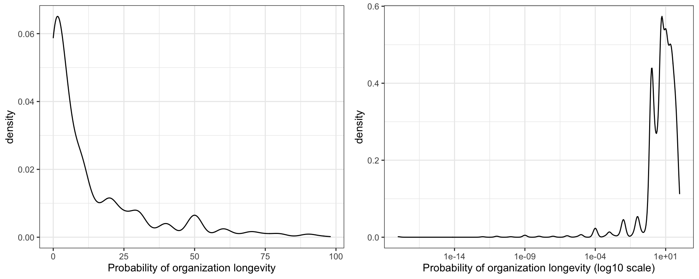
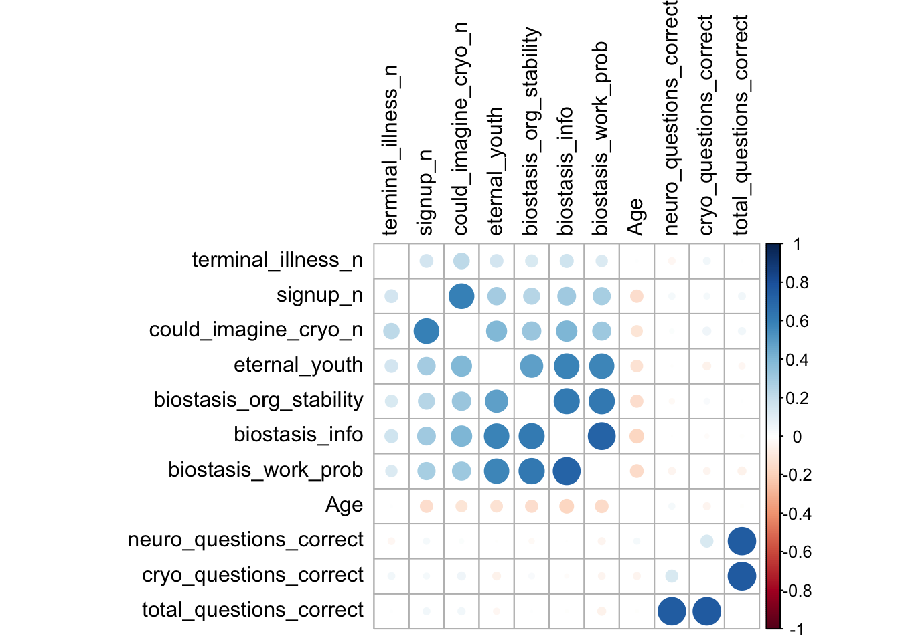
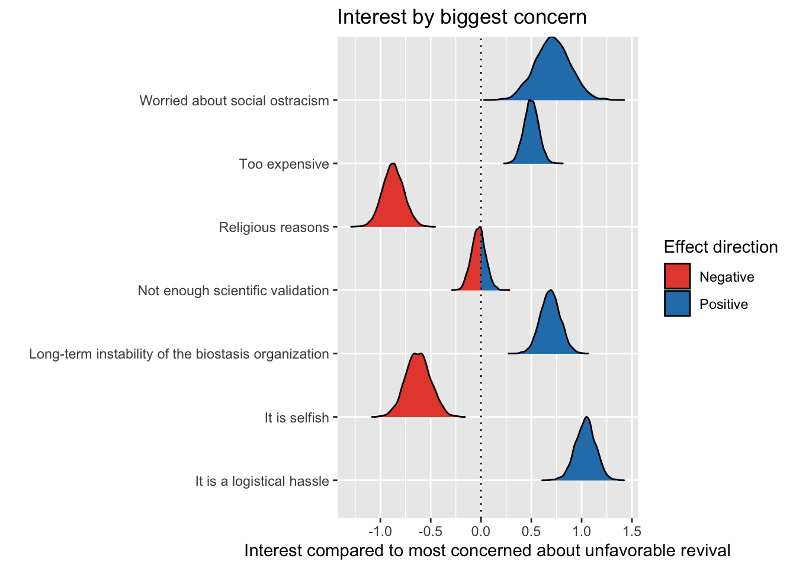

Interest in Biostasis: Much More Than You Wanted to Know
Results from the ACX 2021 Biostasis/Cryonics Survey
Motivation
My motivation for doing this survey is simple: I’m continuously surprised that I’m one of the few people in the world who is obsessed with the problem of how to preserve people with the goal of reviving them in the future. It’s a potential solution to one of humanity’s oldest and most vexing problems and, yet, so few people seem to care. My goal with this survey is to better understand why people are hesitant towards or even against biostasis.
Note: Biostasis is a generalization of the term cryonics to include preservation technologies that don’t necessarily use cold temperatures. It’s also semantics; a bit of rebranding for a term with some unfortunate connotations. I use the terms biostasis and cryonics interchangeably.
Links: Main survey page, Demographic questions, Biostasis/cryonics questions
Previous surveys: Kaiser and colleagues 2014, LW 2016 Survey, Reddit 2019 survey, Melanie Swan’s 2019 survey, Gillett and colleagues 2021
Highlights
- Replication of well-known associations of increased interest in biostasis: younger people; non-religious people; non-spiritual people; transgender women and cisgender men; and people in computer-related professions.
- People who are actually signed up for biostasis have higher average scores on knowledge questions about cryobiology than people who are not signed up.
- People with libertarian and liberal politics are the most consistently interested in and supportive of biostasis. People with conservative and alt-right politics are the most consistently uninterested and unsupportive of biostasis.
- People with a diagnosis of bipolar disorder and autism are more interested in biostasis, while those with a diagnosis of depression are less interested.
- There is a cluster of pro-biostasis and related beliefs all positively correlated with one another: being more likely to be signed up or interested in it, being more able to imagine it, assigning a higher probability it will work, assigning a higher probability of longevity escape velocity, et cetera. One could think of this as a type of “mood affiliation.”
- Of people’s biggest concern about biostasis, religious reasons or selfishness are correlated with the least interest; people most concerned about lack of scientific validation or the possibility of unfavorable revival conditions are slightly more interested; and people most concerned with cost, logistic problems, social ostracism, or organizational stability are the most interested in biostasis.
- About half of respondents are concerned about being revived in an unfavorable condition/state. People endorsing this concern are more likely to say that they would be more interested in biostasis if their closest friends/family signed up.
Thank you
A sincere thank you to everyone who filled the survey out and to Scott for posting it.
Obvious biases are obvious
All results are biased by the referral source of people who read Astral Codex Ten (ACX) and choose to complete an online survey about this topic.
I personally am interested in biostasis and think it’s a good idea. Despite my best intentions to be unbiased, this clearly affects the way I ran the survey and analysis.
Interest in cryonics
Survey Question: Are you currently signed up for a biostasis procedure such as cryonics?
| Total | Percent | Quantification | |
|---|---|---|---|
| No, and I don’t intend to | 1140 | 44.69% | 1 |
| Never thought about it/Unsure | 430 | 16.86% | 2 |
| No, but I’m thinking about it | 753 | 29.52% | 3 |
| No, but I plan to | 174 | 6.82% | 4 |
| No, but I’m in the process of doing so | 9 | 0.35% | 5 |
| Yes | 45 | 1.76% | 6 |
For context, there’s about 2000 people in the world who are signed up for cryonics.
This is the main question used to quantify “interest in biostasis.” The quantification column shows how the answers were converted to scores for correlation analysis.
Survey Question: Could you imagine electing to undergo some biostasis procedure at the time of your legal death?
| Total | Percent | Quantification | |
|---|---|---|---|
| No | 327 | 12.84% | 1 |
| Most likely no | 605 | 23.75% | 2 |
| Unsure | 460 | 18.06% | 3 |
| Mostly likely yes | 303 | 11.9% | 4 |
| Yes | 852 | 33.45% | 5 |
Survey Question: Some people have argued that patients with terminal illnesses should be allowed to start biostasis procedures just prior to legal death, in order to prevent further brain degradation. Do you think this should be allowed?
| Choice | Total Number | Percent | Quantification |
|---|---|---|---|
| Strongly agree | 1135 | 44.67% | 1 |
| Agree | 875 | 34.44% | 2 |
| Unsure | 402 | 15.82% | 3 |
| Disagree | 86 | 3.38% | 4 |
| Strongly disagree | 43 | 1.69% | 5 |
Probability questions
Survey Question: What is your estimate of the probability that technology to sustain you in “eternal youth” will arrive before your death? I.e., that you will achieve longevity escape velocity. Answer on a scale from 0% (definitely false) to 100% (definitely true).
## [1] "Median probability: 5%"## [1] "Geometric mean probability: 2.5%"Survey Question: What is your estimate of the probability that a currently available biostasis procedure will in an ideal case preserve the information necessary for you to theoretically be revived in the far future? Independently of whether that revival will actually happen. Answer on a scale from 0% (definitely false) to 100% (definitely true).
## [1] "Median probability: 5%"## [1] "Geometric mean probability: 2.95%"Survey Question:What is your estimate of the probability the biostasis organization you choose will stay in existence and keep you in biostasis for at least 200 years or until you are able to be revived, whichever comes first? Answer on a scale from 0% (definitely false) to 100% (definitely true).

## [1] "Median probability: 5%"## [1] "Geometric mean probability: 3.2%"Survey Question: What is your estimate of the overall probability that an average person today who undergoes biostasis with an existing procedure and an existing biostasis organization will be successfully revived at some future time? Answer on a scale from 0% (definitely false) to 100% (definitely true).
## [1] "Median probability: 1%"## [1] "Geometric mean probability: 0.87%"On average, people estimated that there a 1 in 100 chance of biostasis working in an ideal case.
One takeaway from these questions is that people assign a pretty high probability of personally reaching longevity escape velocity – much higher than the average probability that they assign biostasis working in the ideal case (rank test p-value < 2.2e-16).
One explanation from this survey that people may be not very interested in biostasis is that they think there is a good chance they will never die regardless of biostasis, because they are going to reach longevity escape velocity.
Being very interested in biostasis requires someone who is starry eyed about some aspects of the future, but steely eyed about others. Emil Kendziorra, CEO at Tomorrow Biostasis, has written about why he thinks longevity escape velocity is (unfortunately!) unlikely to occur soon.
Knowledge about neuroscience and cryobiology
The survey included 4 questions testing knowledge of neuroscience and 4 questions testing knowledge of cryobiology.
| Number Correct | Neuro Questions Raw | Neuro Questions Percent | Cryo Questions Raw | Cryo Questions Percent |
|---|---|---|---|---|
| 0 | 357 | 20.35% | 100 | 5.95% |
| 1 | 578 | 32.95% | 421 | 25.06% |
| 2 | 466 | 26.57% | 516 | 30.71% |
| 3 | 250 | 14.25% | 479 | 28.51% |
| 4 | 103 | 5.87% | 164 | 9.76% |
Only a few people got them all right:
| Number Correct | Total Questions Raw | Total Questions Percent |
|---|---|---|
| 0 | 21 | 1.29% |
| 1 | 134 | 8.26% |
| 2 | 273 | 16.83% |
| 3 | 382 | 23.55% |
| 4 | 349 | 21.52% |
| 0 | 253 | 15.6% |
| 1 | 131 | 8.08% |
| 2 | 66 | 4.07% |
| 3 | 13 | 0.8% |
Let’s see how these scores correlate with one’s profession, using age as a covariate.
For this we will use a Bayesian linear model analysis because it does a good job of handling uncertainty including sample size. If you’re interested in more details, see here and here.
As is typical with linear model analysis, the estimates for the factors are relative to one of the other factors. Here I chose general “white collar” as the reference group. By default, I adjust these linear models for age.
Accuracy on neuroscience questions
People in neuroscience and health care did well on the neuroscience questions. People in economics and law did not do very well.
Accuracy on cryobiology questions
People in physics and other “hard science” fields did well on the cryobiology questions.
The pro-biostasis belief cluster
There is a cluster of pro-biostasis beliefs all positively correlated with one another: being more likely to be signed up or interested in it (quantification of “signup”), being more able to imagine it (“could imagine cryo”), assigning a higher probability it will work (“biostasis work prob”), assigning a higher probability of longevity escape velocity (“eternal youth”), assigning a higher probability that biostasis organizations will be stable enough for success (“biostasis org stability”), assigning a higher probability that a currently available biostasis procedure will in an ideal case preserve the information necessary for you to theoretically be revived in the far future (“biostasis info”), and believing that people with a terminal illness should have the choice to pursue biostasis prior to legal death (“terminal illness”).
None of these beliefs were correlated with the number of correct answers on the four objective knowledge questions for neuroscience and cryobiology. The number of correct answers to the neuroscience and cryobiology knowledge questions were weakly correlated with one another (rho = 0.099, p = 6.9e-05).

Notably, age is inversely correlated with all of the pro-biostasis belief questions, with the exception of one’s support for people with a terminal illness having the choice to pursue biostasis prior to legal death. As a result, age is an important confound and it is adjusted for in the analyses in this essay, unless otherwise noted.
How do the 45 people who report being actually signed up for biostasis differ from the rest of the respondents?
These 45 people do have significantly higher scores on the four questions about cryobiology than the rest of the respondents (average 2.6/4 correct vs 2.1/4, wilcox test p = 0.026). They’re no better on the neuroscience questions. They assign a higher probability of biostasis working in the ideal case (12.3% vs 5.9%, wilcox test p = 1.3e-6). They assign a higher chance of reaching longevity escape velocity in their lifetimes (19.4% vs 11.6%, wilcox test p = 0.003). There is no difference in their average age. Regarding their profession, they’re more likely to be in academic computer science, art, neuroscience, or economics:
Why do people not want biostasis?
Survey Question: Regardless of whether you have already signed up, what is the strongest reason against electing for biostasis for yourself?
| Main Reason Against | Number Choosing | Percent |
|---|---|---|
| There is not enough scientific validation that the procedure will preserve neural features necessary for long-term memory and identity | 719 | 32.08% |
| It is too expensive (most biostasis procedures currently cost around $30,000 - $200,000) | 546 | 24.36% |
| I am worried about being revived in an unfavorable condition/state | 346 | 15.44% |
| Long-term instability of the biostasis organization | 176 | 7.85% |
| It is a logistical hassle | 162 | 7.23% |
| Religious reasons | 147 | 6.56% |
| It is selfish (for example, due to overpopulation or unequal access) | 103 | 4.6% |
| I am worried about being socially unaccepted/ostracized due to my decision | 42 | 1.87% |
The biggest two concerns are the lack of scientific validation and the cost, followed by a concern about being revived in an unfavorable condition.
Survey Question: Which do you consider strong reasons against electing for biostasis for yourself? (Choose any and all that apply.).
| Reason Against Biostasis | Percent Choosing |
|---|---|
| There is not enough scientific validation that the procedure will preserve neural features necessary for long-term memory and identity | 79.7% |
| It is too expensive (most biostasis procedures currently cost around $30,000 - $200,000) | 77.69% |
| Long-term instability of the biostasis organization | 72.29% |
| I am worried about being revived in an unfavorable condition/state | 58.05% |
| It is a logistical hassle | 41.5% |
| It is selfish (for example, due to overpopulation or unequal access) | 19.32% |
| Religious reasons | 11.78% |
| I am worried about being socially unaccepted/ostracized due to my decision | 11.42% |
About half of the respondents list concern about being revived in an unfavorable condition/state as a reason to not pursue biostasis. Relative to someone in a generic “white collar” profession, this concern was more likely to be listed by people working in law:
Relative to someone living in a country with < 10 respondents, concern with unfavorable revival circumstances was more likely to be listed by people living in Ireland:
Relative to someone living in a state with < 10 respondents, concern with unfavorable revival circumstances was more likely to be listed by people living in New York and Oregon:
Concern with unfavorable revival circumstances had no clear correlation with the number of children people have:
About half of the respondents list concern about being the organization’s long-term stability as a reason to not pursue biostasis. Relative to someone in a generic “white collar” profession, this concern was less likely to be listed by people working in neuroscience:
About 20% list a concern about biostasis being selfish. Relative to someone in a generic “white collar” profession, this concern was less likely to be listed by people working in economics, finance, business, law, and practical computer programming:
Relative to someone living in a country with < 10 respondents, concern of selfishness was more likely to be listed by people living in Germany and to a lesser extent, the UK:
Relative to someone living in a state with < 10 respondents, concern of selfishness was less likely to be listed by people living in Arizona and New Hampshire:
Based on the above results and the state motto “Live Free and Don’t Die,” New Hampshire seems primed for a biostasis organization.
People of most political parties in the US are not concerned with selfishness, but members of the Libertarian party are particularly unconcerned:
People with a diagnosis or suspected self-diagnosis of ADHD or bipolar disorder are more likely to report a concern that signing up is a logistical hassle:
Pretty much everyone is concerned about the lack of scientific support for biostasis (80% of people), and this is pretty evenly distributed across professions, with the exception of people working in media:
Among educational degrees, people with an MD degree are particularly concerned about the lack of scientific support:
What might make people more interested in cryonics?
Enough negativity. What do people say would make them more interested in cryonics?
Survey Question: Imagine that your five closest friends or family members were all signed up for biostasis. How much would that affect your desire for signing up yourself?
| Choice | Total Number | Percent | Quantification |
|---|---|---|---|
| A little bit more interested | 784 | 30.76% | 1 |
| More interested | 782 | 30.68% | 2 |
| No change in interest | 557 | 21.85% | 3 |
| Way more interested | 415 | 16.28% | 4 |
| Less interested | 11 | 0.43% | 5 |
I’m pretty surprised the answers here were not higher. Respondents don’t seem to think they would be swayed much by strong social pressure.
People working in statistics, business, finance, and AI report they would be most swayed by the apparent wisdom of their closest friends, whereas people in “blue collar” professions report they would be least swayed by this:
How does this interact with people’s concerns about biostasis?
As expected, people who are concerned about social ostracism would be much more interested in biostasis if their closest friends/family signed up.
People who report having a concern about revival in an unfavorable condition/state also report they would be much more interested if closest friends or family members signed up. To me this is a very important result and gets at part of the psychology behind the unfavorable revival concern. It suggests that part of this concern is driven by doing a weird thing that nobody around them does, possibly making them feel “isolated from the tribe.”
Survey Question: Imagine that choosing the biostasis procedure were free. How much would that affect your desire for signing up yourself?
| Choice | Total Number | Percent | Quantification |
|---|---|---|---|
| Way more interested | 880 | 34.6% | 1 |
| More interested | 596 | 23.44% | 2 |
| A little bit more interested | 532 | 20.92% | 3 |
| No change in interest | 502 | 19.74% | 4 |
| Less interested | 33 | 1.3% | 5 |
How does the hypothetical possibility of free biostasis interact with people’s concerns about biostasis?
As expected, if people are concerned about the cost, then they tend to be stoked about the idea that it could be free. People who are concerned for religious reasons, selfishness, or unfavorable revival conditions tend not to care as much.
Survey Question: Imagine that a consensus of neuroscientists thought that an available biostasis procedure would almost certainly preserve the information content of long-term memories. How much would that affect your desire for signing up yourself?
| Choice | Total Number | Percent | Quantification |
|---|---|---|---|
| Way more interested | 994 | 39.06% | 1 |
| More interested | 671 | 26.37% | 2 |
| A little bit more interested | 475 | 18.66% | 3 |
| No change in interest | 380 | 14.93% | 4 |
| Less interested | 25 | 0.98% | 5 |
How does this interact with people’s concerns about biostasis?
As expected, if people are concerned about a lack of scientific support, then they report they would be more interested if a consensus of neuroscientists thought it would preserve the information content of long-term memories.
People with what sorts of politics would be most swayed by more neuroscientist support?
Among people in the US, members of the Democratic party report that they would “follow the science”; Republicans, not as much. However, this result is confounded by overall interest in biostasis.
Survey Question: Imagine that it were possible to preserve and revive a very small mammal. How much would that affect your desire for signing up yourself?
| Choice | Total Number | Percent | Quantification |
|---|---|---|---|
| No change in interest | 694 | 27.26% | 1 |
| More interested | 657 | 25.81% | 2 |
| A little bit more interested | 652 | 25.61% | 3 |
| Way more interested | 521 | 20.46% | 4 |
| Less interested | 22 | 0.86% | 5 |
How does this interact with people’s concerns about biostasis?
The people with relatively more enthusiasm for the small mammal revival hypothetical are similar to those with more enthusiasm for the previous hypothetical about increasing neuroscientist support for biostasis.
What type of person is interested in biostasis?
How does someone’s biggest concern about biostasis relate to their interest in it? The reference group in this plot is people who are most concerned about unfavorable revival conditions:

This suggests that there are three categories of views why people wouldn’t want to do biostasis:
- Group 1 - “Fat chance”. Their biggest concern is religious reasons or they consider it selfish. These people are pretty uninterested and are probably not going to be swayed.
- Group 2 - “Meh”. Their biggest concern is a lack of scientific validation of long-term memory/identity or concern about being revived in an unfavorable state/condition (the reference level/group in the chart above, so not shown, but basically tied with people concerned about a lack of scientific validation). They might be interested, but it would take a lot more evidence or planning on how to avoid an unfavorable outcome.
- Group 3 - “Need to go the last mile.” Their biggest concerns are that it is a logistical hassle, the organization might not last, it is expensive, or they’re worried about social ostracism (this last group is very small). People who have these things as their biggest concern are probably more easily convinced if this issue were addressed. Arguably, efforts in these areas might have the highest return on investment from the perspective of getting more people to sign up.
What is the correlation between gender and interest in biostasis? Cisgender men, transgender women, and people with other genders are more interested in biostasis relative to cisgender women:
What is the correlation between self-identified race and interest in biostasis? Relative to people who identify as non-Hispanic white, people who identify as Hispanic seem to be slightly less interested in signing up for biostasis:
What is the correlation between sexual orientation and interest in biostasis? Compared to people who are heterosexual, people who are bisexual seem to be more interested in biostasis:
What is the correlation between relationship status and interest in biostasis?
Compared to people who are single, people who are “in a relationship” (but presumably not married, since the question requires choosing one or the other) are more interested in biostasis. This is completely reversed for people who are married. Not the strongest correlations and maybe a “traditional values”/conservatism confound.
What is the relative interest in biostasis of people with children?
There is a negative correlation with interest and biostasis and number of children. This peaks at 4 children and then seems to reverse for people with 6+ children, who maybe just love life (high error bars on the trend reversal and probably not true, but kind of fun to think about).
How does one’s degree correlate with interest in biostasis?

People with a JD are the most uninterested in biostasis. People with no degree or a high school degree are the most interested. As with all analyses, this model includes age as a covariate.
How does one’s profession correlate with interest in biostasis?
People who work in math and computers are the most interested in biostasis.
How does one’s work status correlate with interest in biostasis? Relative interest compared to academics (on the teaching side):
What countries contain people that are more interested in biostasis?
Based on this small sample with appropriately large error bars, the strongest potential markets are Israel and Sweden. Looks like Cryonics Israel is a non-profit planning to grow and eventually start an organization there; on the other hand, as of 2004, it seems like interest in cryonics in Sweden was quite low.
People living in the UK seem to be among the least interested in biostasis. That seems to fit with the relative lack of members/organizations in the UK compared to the US. People living in France, where cryonics is illegal, are also less interested.
What states in the US have people most interested in biostasis?
For the most part, the states with people most interested tend to be blue states, such as California, Oregon, and New York. There are also some stand out purple states, such as Michigan and New Hampshire, wherein people are more interested.
How does political ideology correlate with interest in biostasis?
Relative to people with marxist politics, people with liberal, libertarian, and neoreactionary politics report the most interest in biostasis. On the other hand, people with conservative and alt-right politics are less interested.
How does religiosity correlate with interest in biostasis? People who report atheist and non-spiritual religious views tend to have the most interest in biostasis:
Which religious groups are most interested in biostasis? People with a religion of Unitarian Universalism or similiar tend to be more interested in biostasis:
How does interest in biostasis interact with having a psychiatric diagnosis? People with a diagnosis of bipolar disorder and autism are more interested in biostasis, while those with a diagnosis of depression are less interested:
How does length of time reading ACX/SSC correlate with one’s interest in cryonics?
People who have read ACX/SSC for longer tend to be more interested in it. Notably, Scott doesn’t talk about biostasis/cryonics all that much, although it is clearly a canonical “rationalist”/LW/ACX/SSC memeplex-affiliated belief, going back to the Overcoming Bias days.
Speaking of where one has learned about biostasis, how does one’s reported main knowledge source relate to one’s interest in it? The reference level here is getting one’s knowledge from books. Which books? I have no idea. In my opinion, there really isn’t a great, widely read book about cryonics/biostasis out there.
There are a few takeaways here:
- Completely unsurprising that learning about biostasis from cryonics organizations is associated with increased interested in it.
- Learning about biostasis from random websites online is kind of the classic stereotype, which is someone who is interested in things off the beaten path.
- Among the write-ins, most people mentioned LW/SSC/ACX or the WBW article.
- People who haven’t heard about it tend to not be as interested, which is kind of encouraging because it suggests that more outreach could be helpful.
- TV, film, or YouTube is associated with low interest – maybe these people only heard of it in a joke reference or something like Futurama or Austin Powers but haven’t learned why some people think it’s actually a good idea.
- Perhaps the most interesting finding to me is that people who learned about it from their friends, coworkers, or relatives are relatively more interested in it. In practice, it seems that social proof is powerful.
What types of factors push people to different organizations?
Survey Question: If you are considering or signed up for biostasis, which organization would you choose/have you chosen?
Here are the choices that had >= 10 answers:
| Organization | Number Choosing | Percent |
|---|---|---|
| Alcor (Scottsdale, Arizona, USA) | 240 | 56.6% |
| Other | 57 | 13.44% |
| Cryonics Institute (Clinton Township, Michigan, USA) | 56 | 13.21% |
| Tomorrow Biostasis (Berlin, Germany) | 31 | 7.31% |
| Cryonics Germany (Dresden, Germany) | 25 | 5.9% |
| KrioRus (Moscow, Russia) | 15 | 3.54% |
Alcor is far and away the top choice. Tomorrow Biostasis is the big new option on the scene, having only started a couple of years ago. The Other category is not very informative since it is includes many write-ins of “I don’t know, I need to do research” or something similar.
What are the relative concerns of people interested in Alcor?
People interested in Alcor are more concerned lack of social acceptance and less concerned about it being selfish. Worth noting that Alcor is one of the more expensive options available.
How about the second largest organization, Cryonics Institute?
People interested in Cryonics Institute are not as concerned about biostasis being expensive, perhaps because it is one of the less expensive options available, at around $30,000. They are also less concerned about the lack of scientific validity.
How about the third largest organization, Tomorrow Biostasis?
People interested in Tomorrow Biostasis tend to be more concerned about selfishness, which is consistent with the organization being in Germany and that being a major concern of people living in Germany. They also tend to be less concerned about it being a logistical hassle to sign up, which may be because Tomorrow Biostasis has made the sign up process so easy.
Legal question: who is for against biostasis for people with a terminal illness?
How does political ideology correlate with supporting people’s option to choose biostasis in the case of a terminal illness? Relative to people with marxist politics, people who with conservative, alt-right, or neoreactionary politics tend to not support people having the option to choose biostasis if they have a terminal illness:
How about US political parties? Among US parties, Libertarians and Democrats tend to be in favor of this, while Republicans are not in favor:
There’s also a fairly strong correlation for religious views. Relative to agnostic people, committed theists tend to be against the option to choose biostasis in the case of terminal illness:
Which seems to be driven largely by Christian groups:
State-level support seems to track pretty well with medical assistance in dying laws: people living in Oregon, California, New Jersey, etc are in favor.

One would hope that our libertarian-leaning state New Hamsphire would be even higher (and it’s certainly not low), but for whatever reason medical assistance in dying laws have not done well in New Hampshire.
In terms of country-level support, these are the trends:
This is odd considering that people living in Israel and Sweden seemed to be more interested in biostasis in general. There may be some deeper cultural differences.
Among respondents who say that people should not be allowed to choose biostasis in the case of a terminal illness, their concerns about biostasis tend to be because of religious reasons and/or because they consider it selfish:
Conclusions
Here are a few overall take-aways:
1. I was surprised by the consistency/strength of the negative association between people with conservative viewpoints and having less interest in biostasis/less support for other people’s choices regarding it. Biostasis is generally a liberal/libertarian thing.
2. Reading the write-in answers, I was surprised by the number of people who said that they did not want biostasis because they did not want to live any longer. Several people specifically noted that they did not want to live any longer because they were depressed. This may reflect the association in this sample between depression and lower interest in biostasis. I should add something about this as an option the next time the survey is run.
3. A solid half of the respondents noted a concern about revival in an unfavorable condition/state as a reason to not pursue biostasis. And this was the third most common main concern. For the next survey, I think a question could try to parse this into more detailed categories. For example, an additional question could be: If you are concerned about revival in an unfavorable condition/state, what in particular are you most worried about?
- Not applicable, I’m not particularly concerned about this
- I’m concerned about society being too similar to how it is now, so I’d still have to work, would still be depressed, would still have chronic pain, or something similar
- I’m concerned about only being revived for an instrumental purpose, so I would be in labor camp-like situation, forced to undergo experimentation, or something similar
- I’m concerned about being revived in a dystopian/hell-world scenario of constant torture, or something similar
Also, I’d be curious to see if the option of being removed from biostasis under certain circumstances would help allay this concern at all:
For people concerned about revival in an unfavorable condition/state, imagine that your biostasis organization offered you the ability to direct removal from conservation under certain circumstances or to allow revival only under certain circumstances. Do you think this option would allay your concern about revival in an unfavorable condition/state?
- Not applicable, I’m not particularly concerned about this
- Strongly disagree
- Disagree slightly
- Neutral/Unsure
- Slightly agree
- Strongly agree
Write in: If you are concerned about revival in an unfavorable condition/state, is there anything you can imagine that might allay this concern?
For more on this topic, which I think is underdiscussed, see this more detailed essay.
4. Looking at the results of this survey, it is striking the degree to which interest in computers, math, and computer science is associated with interest in biostasis, even within the ACX community.
The vast majority of people in the world are not signed up for cryonics. Only about 2000 in 7.6 billion people, or 0.0000263%. Whereas if you’re an academic computer scientist who responds to ACX surveys, the probability is about 10%, which is 380,000 times higher.
So instead of trying to explain the ideas behind cryobiology and neuroscience, perhaps people interested in promoting biostasis should be explaining the ideas behind computer science and trying to get people to read ACX. In other words, perhaps it really is true that P(A|B) = [P(A)*P(B|A)]/P(B), and all the rest is commentary.
R Markdown code used to create this essay
Can be found here: https://github.com/synopticz/synopticz.github.io/blob/main/rmarkdown_code_2021_acxsurvey.rmd